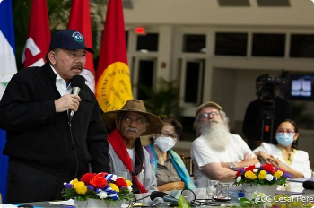
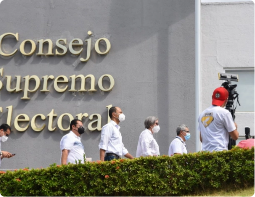

Daniel Ortega inventó un “tío abuelo obispo” para atacar con virulencia a la Iglesia

Su hermano Humberto Ortega lo desmiente: Marco Antonio Ortega no era un obispo “cómplice”, sino el abuelo que abogó por su padre Daniel Ortega en 1934
EMERGENCIA CORONAVIRUS
Covid-19 en ascenso: Minsa admite más de 200 contagios en la última semana
POLÍTICA
Victoria Cárdenas y Berta Valle exigen ver a Juan Sebastián Chamorro y Félix Maradiaga

POLÍTICA
OEA condena con 26 votos el arresto de opositores y exige su liberación inmediata
El Consejo Permanente aprueba resolución por amplia mayoría; únicamente cinco países miembros se abstuvieron y tres votaron en contra
POLÍTICA
La fórmula de Daniel Ortega para anular a la oposición de la competencia electoral
NACIÓN

Policía secuestra a opositores Dora M. Téllez, Ana M. Vijil, Suyen Barahona y Hugo Torres
POLÍTICA
“El respeto a los derechos humanos está por encima de cualquier principio de no injerencia”
POLÍTICA
Régimen señala a miembros de la OEA de “cabildear” para interferir en los asuntos de Nicaragua
NACIÓN
Daniel Ortega entre los 37 “depredadores de la libertad de prensa” 2021, según RSF
NACIÓN
Precandidatos presidenciales opositores se mantienen en la carrera electoral
